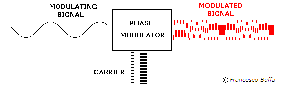

- जब वाहक तरंग की आवृत्ति संकेत तरंग (Modularity wave) की आवृत्ति के अनुसार परिवर्तित होती है तो यह आवृत्ति मॉडुलेशन कहलाता है।
- AM की श्रृव्यता (Audio quality) बहुत खराब होती है। इसे सही करने के लिए आयाम परिवर्तन को शून्य करना होगा (अर्थात् वाहक तरंग का आयाम नियत रखना होगा) FM संचरण में इसे ही ठीक किया जाता है।
- FM में FM तरंग का सम्पूर्ण आयाम नियत रहता है।
- FM में, कुल संचरित शक्ति नियत रहती है।
(4) आवृत्ति विचलन: वाहक तरंग की माध्य आवृत्ति (fc) से अधिकतम परिवर्तन को आवृत्ति विचलन कहते हैं। दूसरे शब्दों आवृत्ति fc के ऊपर या नीचे परिवर्तन को आवृत्ति विचलन कहते हैं।
